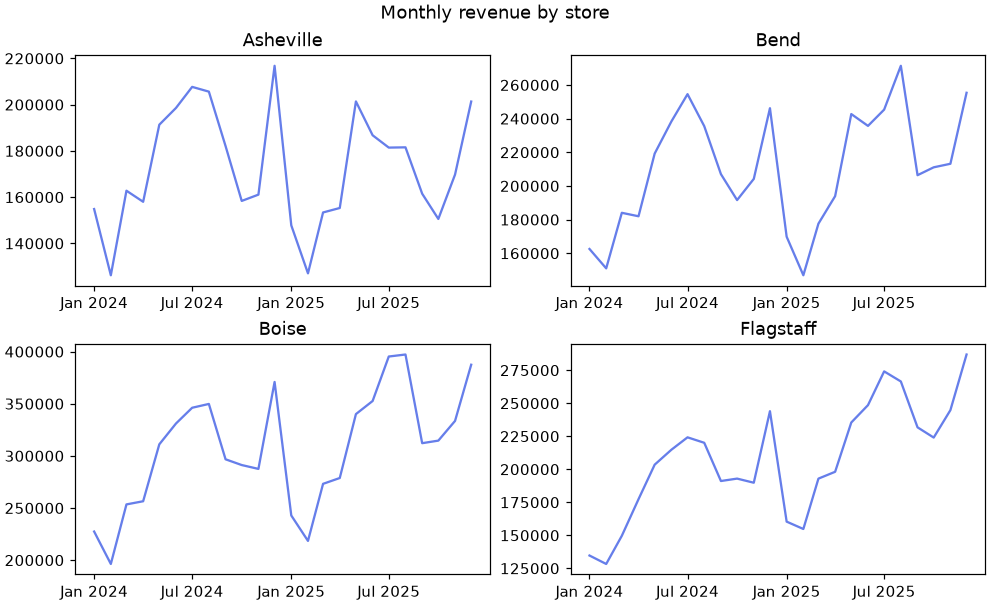
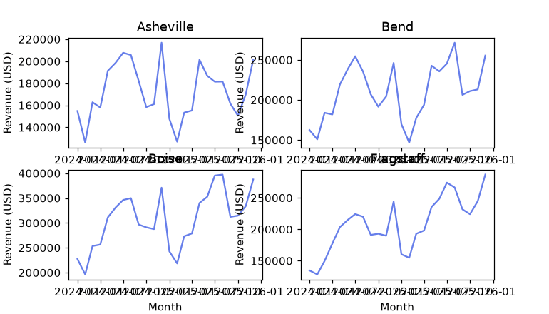
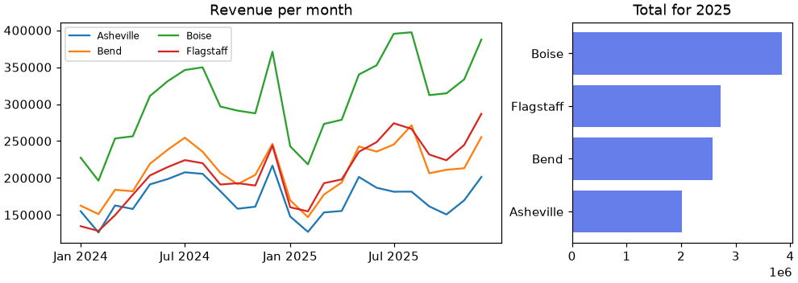
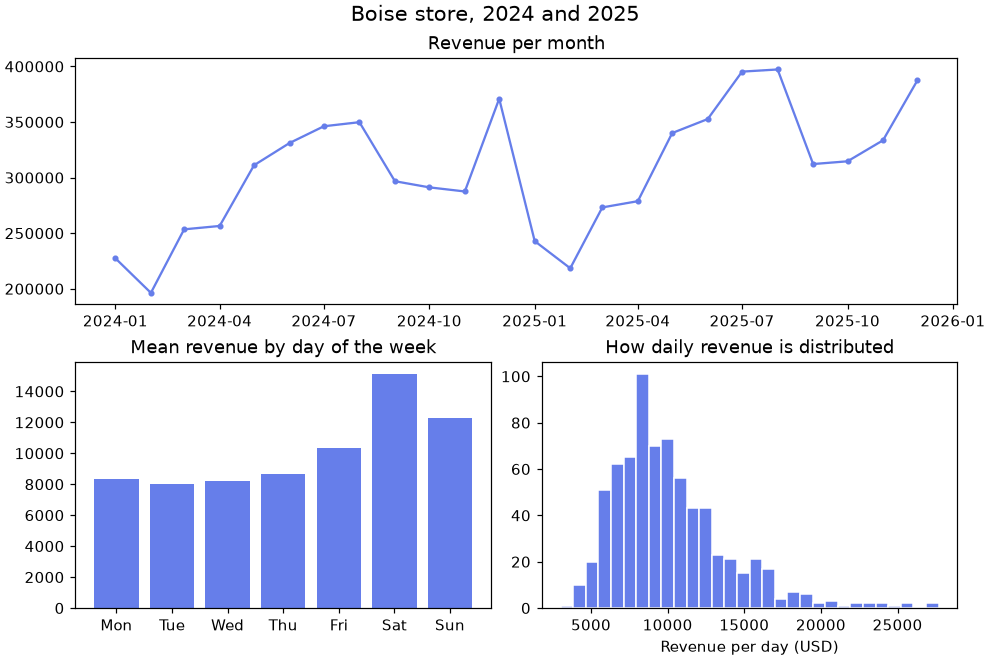
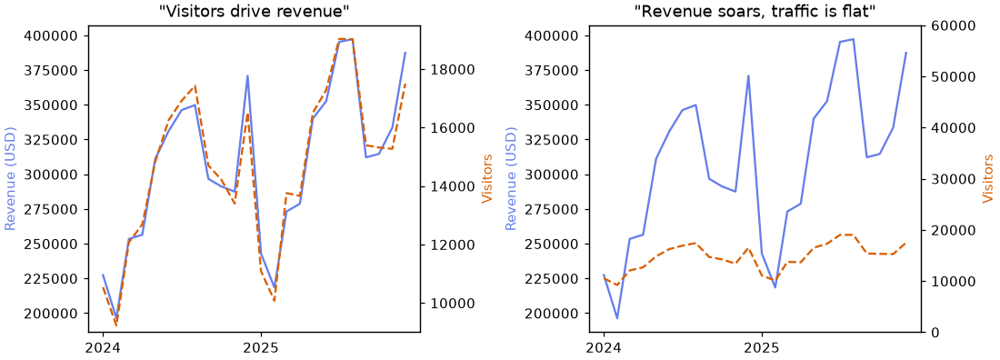
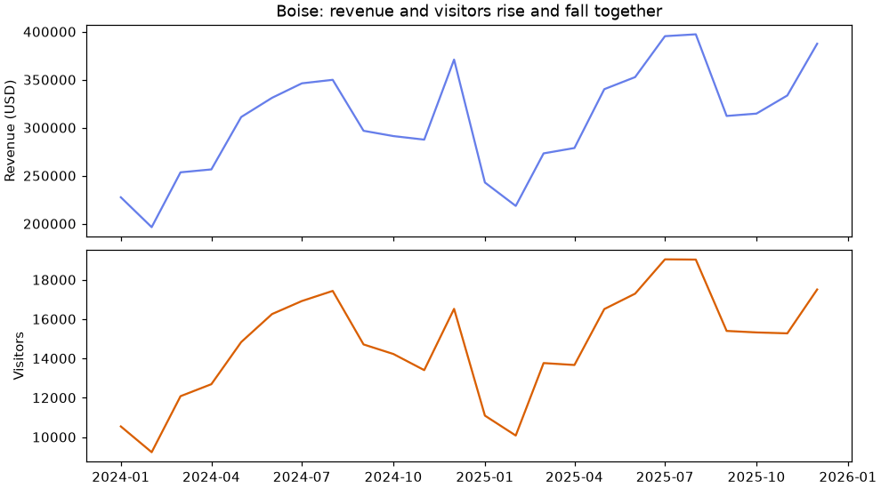
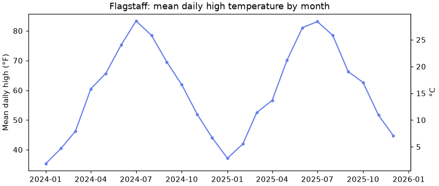
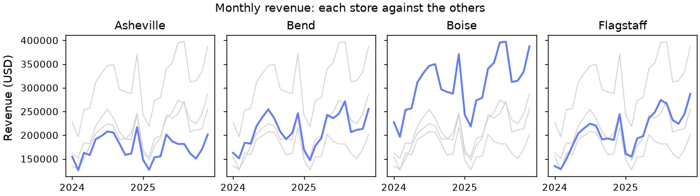
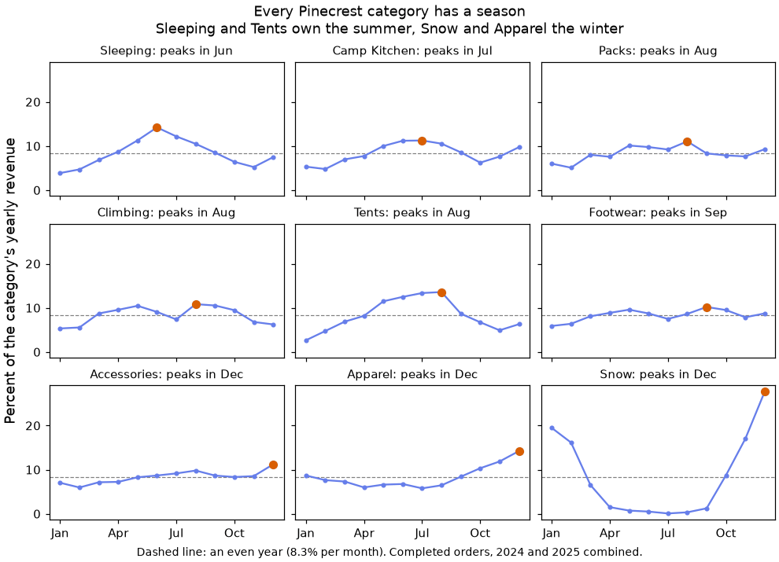
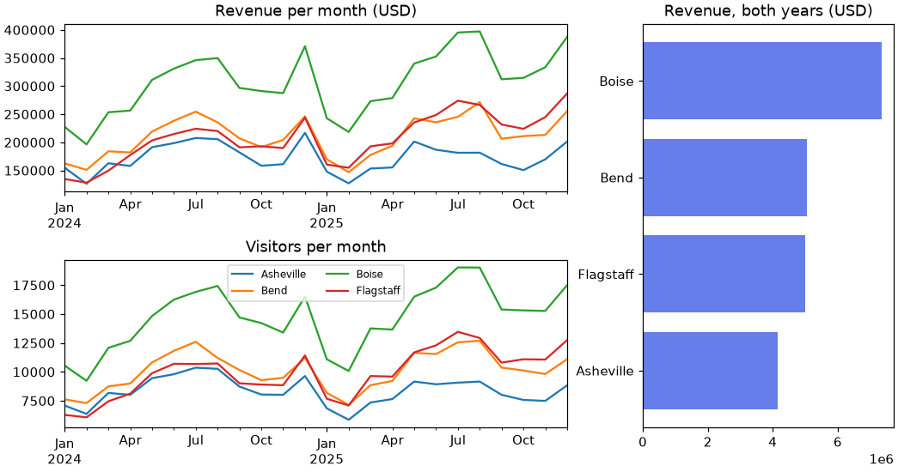

🧩 Lesson 3.2: Subplots and Composition
Put several charts on one figure so the reader can compare them at a glance: grids, shared scales, named layouts, and the honest way to show two measures together.
🎯 Learning Objectives
By the end of this lesson, you will be able to:
- Create a grid of Axes with
plt.subplots(nrows, ncols)and reach each one by index or in a loop - Decide when panels should share an x or y axis, and explain what the reader loses when they do not
- Build an uneven layout with
plt.subplot_mosaic()and address its panels by name - Explain why a chart with two different y scales can mislead, and replace it with stacked panels or a ratio
- Draw small multiples from grouped data with one function and one loop
In This Lesson
🗞️ One Figure, Several Charts
In Lesson 3.1 every figure held one chart. Real questions are rarely that tidy. "How are the stores doing?" has four answers, one per store. "What is going on in Boise?" wants a trend, a weekly pattern and a sense of how much days vary. You could draw separate figures and ask the reader to scroll between them, but people compare best what they can see at the same time.
💡 Mental Model: Panels on a Page
Think of a page of a comic or the front page of a newspaper. The page is one object, divided into panels. Each panel shows one thing, and the arrangement tells you how to read them: panels in a row invite comparison, a wide panel across the top is the headline, and smaller panels underneath are the supporting detail. In Matplotlib the page is the Figure and each panel is an Axes. You already know how to draw on an Axes. This lesson is about arranging them.
🤔 Why This Matters
Composition is where the object-oriented habit from Lesson 3.1 pays off. With several Axes on a figure there is no single "current chart" any more, so you need a name for each one. You have been holding ax in a variable all along. Now you will hold several.
🔲 A Grid of Axes
Start a new notebook and rebuild the monthly revenue table from Lesson 3.1: one row per month, one column per store.
import matplotlib.pyplot as plt
import numpy as np
import pandas as pd
pd.set_option("display.width", 150)
pd.set_option("display.max_columns", 20)
daily = pd.read_csv("data/daily_sales.csv", parse_dates=["date"])
daily["month"] = daily["date"].dt.to_period("M").dt.to_timestamp()
monthly = daily.pivot_table(index="month", columns="store", values="revenue", aggfunc="sum")
stores = list(monthly.columns)
print(stores)
print(monthly.shape)Output
['Asheville', 'Bend', 'Boise', 'Flagstaff']
(24, 4)You have been calling plt.subplots() with no grid arguments, which gives one Axes. Give it a number of rows and columns and it gives back a whole grid.
fig, axs = plt.subplots(2, 2, figsize=(9, 5.5), layout="constrained")
print(type(axs).__name__, axs.shape)
print(type(axs[0, 1]).__name__)
print(len(fig.axes))Output
ndarray (2, 2)
Axes
4Look at what came back. axs is a NumPy array of shape (2, 2), and each element is an Axes. Everything you learned in Lesson 1.1 about two-dimensional indexing applies: axs[0, 1] is row 0, column 1, the top-right panel. (The name axs is only a convention for "several Axes"; you will also see axes.)
You could now write axs[0, 0].plot(...), axs[0, 1].plot(...) and so on, four times. A loop is shorter and scales to any grid. axs.flat walks through the panels row by row, and zip pairs each panel with a store.
tick_dates = pd.to_datetime(["2024-01-01", "2024-07-01", "2025-01-01", "2025-07-01"])
tick_labels = ["Jan 2024", "Jul 2024", "Jan 2025", "Jul 2025"]
for ax, store in zip(axs.flat, stores):
ax.plot(monthly.index, monthly[store], color="#667eea")
ax.set_title(store)
ax.set_xticks(tick_dates, labels=tick_labels)
fig.suptitle("Monthly revenue by store")
plt.show()
Two new methods appeared. fig.suptitle() puts one title over the whole figure (a "super title"), while ax.set_title() still titles one panel. And ax.set_xticks(positions, labels=...) chooses where the ticks go and what they say; four short labels fit a small panel better than the default dates, and keeping them in two variables lets later charts reuse them. Lesson 3.3 has much more on ticks.
What Shape Do You Get Back?
The one surprise in plt.subplots() is that the type of its second return value depends on the grid you ask for.
f1, a = plt.subplots(1, 3)
f2, b = plt.subplots(3, 1)
f3, c = plt.subplots()
f4, d = plt.subplots(1, 3, squeeze=False)
print("1 x 3:", a.shape)
print("3 x 1:", b.shape)
print("1 x 1:", type(c).__name__)
print("1 x 3 with squeeze=False:", d.shape)
for f in (f1, f2, f3, f4):
plt.close(f)Output
1 x 3: (3,)
3 x 1: (3,)
1 x 1: Axes
1 x 3 with squeeze=False: (1, 3)| You ask for | You get | Index it with |
|---|---|---|
| One Axes (the default) | A single Axes, not an array | ax |
| One row or one column | A 1-D array | axs[0], axs[1] |
| Several rows and columns | A 2-D array | axs[row, col] |
Matplotlib "squeezes" away dimensions of length one to save you typing. It is convenient until a function of yours expects 2-D and receives 1-D. axs.flat works on every array shape, which is one more reason to loop with it, and squeeze=False always gives a 2-D array when you want no surprises.
📐 Layout: Size and Spacing
Every figure so far has used layout="constrained". With several panels you can finally see what it has been doing for you. Here is a grid without it.
fig, axs = plt.subplots(2, 2, figsize=(7, 4)) # no layout argument
for ax, store in zip(axs.flat, stores):
ax.plot(monthly.index, monthly[store], color="#667eea")
ax.set_title(store)
ax.set_xlabel("Month")
ax.set_ylabel("Revenue (USD)")
plt.show()
Constrained layout measures every title, label and tick label after you have drawn them and then sizes the panels so that nothing overlaps and nothing falls off the edge. Ask for it when you create the figure, with layout="constrained", and you will rarely think about spacing again.
The other half of layout is the size of the page. Panels divide the figure between them, so a figure with more panels needs more inches. A useful starting point is 3 to 4.5 inches of width and 2.5 to 3 inches of height per panel, up to about 10 inches wide for a notebook or web page. When one column deserves more room than another, width_ratios (and height_ratios for rows) divides the space unevenly.
totals_2025 = daily[daily["date"].dt.year == 2025].groupby("store")["revenue"].sum().sort_values()
fig, (left, right) = plt.subplots(1, 2, figsize=(9, 3.2), width_ratios=[2, 1], layout="constrained")
for store in stores:
left.plot(monthly.index, monthly[store], label=store)
left.set_title("Revenue per month")
left.set_xticks(tick_dates, labels=tick_labels)
left.legend(ncols=2, fontsize=8)
right.barh(totals_2025.index, totals_2025.values, color="#667eea")
right.set_title("Total for 2025")
plt.show()
print(round(left.get_position().width / right.get_position().width, 1))Output
2.0
Notice fig, (left, right) = .... Because a one-row grid comes back as a 1-D array of two Axes, you can unpack it straight into two meaningful names. For two or three panels, names like left and right read better than axs[0] and axs[1]. The printed ratio confirms that the left panel is twice as wide as the right one.
🧱 Named Layouts with subplot_mosaic
A regular grid suits panels that are all the same kind. A summary figure usually is not regular: one wide panel for the main trend and smaller ones for supporting views. plt.subplot_mosaic() lets you draw the layout as a little picture made of names. Each name is a panel, and a name that repeats across neighboring cells makes that panel span them.
fig, axd = plt.subplot_mosaic(
[["trend", "trend"],
["week", "spread"]],
figsize=(9, 6), layout="constrained")
print(type(axd).__name__, list(axd))Output
dict ['trend', 'week', 'spread']This time you get back a dictionary, conventionally called axd, whose keys are the names you chose. "trend" appeared twice in the top row, so it is one panel two cells wide. Now fill each panel by name with a one-store summary of Boise.
boise = daily[daily["store"] == "Boise"]
by_weekday = boise.groupby(boise["date"].dt.dayofweek)["revenue"].mean() # 0 = Monday
axd["trend"].plot(monthly.index, monthly["Boise"], marker="o", markersize=3, color="#667eea")
axd["trend"].set_title("Revenue per month")
axd["week"].bar(["Mon", "Tue", "Wed", "Thu", "Fri", "Sat", "Sun"], by_weekday.values, color="#667eea")
axd["week"].set_title("Mean revenue by day of the week")
axd["spread"].hist(boise["revenue"].dropna(), bins=30, color="#667eea", edgecolor="white")
axd["spread"].set_title("How daily revenue is distributed")
axd["spread"].set_xlabel("Revenue per day (USD)")
fig.suptitle("Boise store, 2024 and 2025", fontsize=14)
plt.show()
axd["trend"], not axs[0].Named panels make code easier to read and to change. If you later move the histogram to the left, you edit the layout picture and nothing else, because no code depends on positions.
| Layout | Meaning |
|---|---|
[["a", "b"], ["c", "d"]] | A plain 2 by 2 grid with named panels |
[["main", "side"], ["main", "side2"]] | main spans both rows on the left |
[["top", "top"], ["left", "."]] | A period leaves a cell empty |
"AAB;CCB" | String shorthand: one letter per cell, ; between rows |
subplot_mosaic() accepts width_ratios, height_ratios, sharex and sharey just as subplots() does. The one rule: each name must cover a rectangle.
⚠️ Twin Axes, and When Not to Use Them
Sooner or later someone will ask you to "put revenue and visitors on the same chart". They are in different units (dollars and people) with very different sizes, so they cannot share a y axis. Matplotlib offers a tempting answer: ax.twinx() creates a second Axes on top of the first, sharing the x axis but with its own y axis on the right.
bm = boise.groupby("month")[["revenue", "visitors"]].sum()
fig, ax = plt.subplots(figsize=(9, 3.6), layout="constrained")
ax.plot(bm.index, bm["revenue"], color="#667eea")
ax.set_ylabel("Revenue (USD)", color="#667eea")
ax2 = ax.twinx()
ax2.plot(bm.index, bm["visitors"], color="#d95f02", linestyle="--")
ax2.set_ylabel("Visitors", color="#d95f02")
ax.set_title("Boise: monthly revenue (solid) and visitors (dashed)")
plt.show()
print(len(fig.axes), "Axes on this figure")Output
2 Axes on this figureIt works, and it is the most misused feature in charting. The problem is that where the two lines sit relative to each other is decided by the two scales, and the scales are arbitrary. Whoever draws the chart can make the lines hug, cross, or fly apart without changing a single number. Watch: the same data twice, with only the right-hand axis limits changed.
fig, axs = plt.subplots(1, 2, figsize=(10, 3.6), layout="constrained")
versions = [((9000, 19500), '"Visitors drive revenue"'),
((0, 60000), '"Revenue soars, traffic is flat"')]
for ax, (limits, claim) in zip(axs, versions):
ax.plot(bm.index, bm["revenue"], color="#667eea")
ax.set_ylabel("Revenue (USD)", color="#667eea")
ax.set_xticks(pd.to_datetime(["2024-01-01", "2025-01-01"]), labels=["2024", "2025"])
right = ax.twinx()
right.plot(bm.index, bm["visitors"], color="#d95f02", linestyle="--")
right.set_ylabel("Visitors", color="#d95f02")
right.set_ylim(limits)
ax.set_title(claim)
plt.show()
Neither chart is a lie in its numbers, and each one pushes the reader toward a different conclusion. A crossing point on a twin-axis chart means nothing at all: it is where two unrelated rulers happen to line up.
What to Do Instead
Stack two panels that share the x axis. Each measure gets its own honest scale, the months line up vertically, and nobody can read meaning into an overlap that does not exist.
fig, (top, bottom) = plt.subplots(2, 1, figsize=(9, 5), sharex=True, layout="constrained")
top.plot(bm.index, bm["revenue"], color="#667eea")
top.set_ylabel("Revenue (USD)")
top.set_title("Boise: revenue and visitors rise and fall together")
bottom.plot(bm.index, bm["visitors"], color="#d95f02")
bottom.set_ylabel("Visitors")
plt.show()
per_visitor = bm["revenue"] / bm["visitors"]
print("Revenue per visitor, lowest and highest month:", per_visitor.min().round(2), per_visitor.max().round(2))Output
Revenue per visitor, lowest and highest month: 19.85 22.46
Or plot the relationship itself. If the real question is how the two measures relate, compute the thing you care about. Revenue per visitor stays between about $20 and $22.50 in every month, which answers the question more directly than any pair of lines: the two move together because each visitor spends about the same. A scatter plot of one against the other (Lesson 3.1) is another good answer.
The Honest Use: One Quantity, Two Units
A second axis is fine when both sides measure the same thing, because then the two scales are tied together by a formula and nobody chooses them. ax.secondary_yaxis() takes a pair of conversion functions and keeps the two sides in step. Temperatures in Flagstaff, in both Fahrenheit and Celsius:
weather = pd.read_csv("data/store_weather.csv", parse_dates=["date"])
flag = weather[weather["city"] == "Flagstaff"]
flag_monthly = flag.groupby(flag["date"].dt.to_period("M").dt.to_timestamp())["high_f"].mean()
def f_to_c(f):
return (f - 32) * 5 / 9
def c_to_f(c):
return c * 9 / 5 + 32
fig, ax = plt.subplots(figsize=(8, 3.4), layout="constrained")
ax.plot(flag_monthly.index, flag_monthly, color="#667eea", marker="o", markersize=3)
ax.set_ylabel("Mean daily high (°F)")
ax.set_title("Flagstaff: mean daily high temperature by month")
celsius = ax.secondary_yaxis("right", functions=(f_to_c, c_to_f))
celsius.set_ylabel("°C")
plt.show()
print(f"{flag_monthly.max():.1f} °F is {f_to_c(flag_monthly.max()):.1f} °C")Output
83.3 °F is 28.5 °C
✅ A Simple Test
Before reaching for twinx(), ask: "Could I change one of these axes and make the chart tell a different story?" If yes, use stacked panels or a ratio. If the two axes are locked together by a formula, a secondary axis is fine.
🪟 Small Multiples
The grid of four stores has a name in the visualization world: small multiples. It means the same small chart repeated once per group, with the same axes, so that the only thing that changes from panel to panel is the data. The reader learns to read one panel and can then read them all. It is one of the most effective designs there is, and it replaces the tangle you get from putting many lines on a single chart.
The clean way to build small multiples is a function that draws one panel on an Axes it is given, plus a loop. This is the payoff of the object-oriented style: the function does not care where on the figure its Axes lives.
def draw_store(ax, store):
"""Draw one store in color, with the other stores in gray behind it."""
for other in stores:
if other != store:
ax.plot(monthly.index, monthly[other], color="lightgray", linewidth=1)
ax.plot(monthly.index, monthly[store], color="#667eea", linewidth=2)
ax.set_title(store)
ax.set_xticks(pd.to_datetime(["2024-01-01", "2025-01-01"]), labels=["2024", "2025"])
fig, axs = plt.subplots(1, 4, figsize=(10, 2.8), sharex=True, sharey=True, layout="constrained")
for ax, store in zip(axs, stores):
draw_store(ax, store)
fig.suptitle("Monthly revenue: each store against the others")
fig.supylabel("Revenue (USD)")
plt.show()
The gray lines are the trick that makes this version better than the plain grid. Every panel carries the full context, so you never have to look back and forth to compare, and the one colored line tells you which store the panel is about. You will use color this way, gray for context and one strong color for the subject, throughout Lesson 3.3.
💡 Small Multiples or One Chart?
Four lines on one chart are readable. Nine are spaghetti. As a rule of thumb, when a single chart needs more than four or five colors, or the lines cross so often that you cannot follow one, switch to small multiples. The cost is that each panel is small, so keep each one simple: no legends inside panels, few ticks, short titles.
⚠️ Common Mistakes
Almost every subplot error comes from forgetting what plt.subplots() handed back. When one of these appears, print type(axs) and axs.shape first. That is not a beginner's crutch; it is what experienced people do too.
1. Plotting on the Array Instead of an Axes
fig, axs = plt.subplots(2, 2)
axs.plot(monthly.index, monthly["Boise"])Error
AttributeError: 'numpy.ndarray' object has no attribute 'plot'What it means: axs is the NumPy array that holds the four Axes, and an array has no plot method. The same message appears for axs[0].plot(...) on a 2-D grid, because axs[0] is a whole row. Fix: pick one Axes: axs[0, 0].plot(...), or loop over axs.flat.
2. Two Indexes on a One-Row Grid
fig, axs = plt.subplots(1, 3)
axs[0, 1].set_title("Middle panel")Error
IndexError: too many indices for array: array is 1-dimensional, but 2 were indexedWhat it means: a grid with one row is squeezed to a 1-D array, so it takes one index, not two. Fix: axs[1]. If the number of rows varies in your code, create the grid with squeeze=False and always use two indexes.
3. A pyplot Call Inside the Loop
fig, axs = plt.subplots(2, 2, layout="constrained")
for ax, store in zip(axs.flat, stores):
ax.plot(monthly.index, monthly[store])
plt.title(store) # pyplot style: which Axes is this?
print([ax.get_title() for ax in axs.flat])
plt.close(fig)Output (three panels have no title, and no error says so)
['', '', '', 'Flagstaff']What happened: plt.title() writes on the "current" Axes, which is the last one created: the bottom-right panel. All four titles were written there, one over the other, and the last one won. Fix: ax.set_title(store). This is exactly the bug the object-oriented style exists to prevent.
4. Empty Panels Left Over
Five charts do not fill a 2 by 3 grid, and the sixth cell shows an empty frame with ticks from 0 to 1, which looks like a chart that failed to load. Remove what you did not use.
fig, axs = plt.subplots(2, 3, figsize=(9, 4.5), layout="constrained")
panels = stores + ["All stores"]
for ax, name in zip(axs.flat, panels):
ax.set_title(name)
print(len(fig.axes), "Axes before")
for ax in axs.flat[len(panels):]:
ax.remove()
print(len(fig.axes), "Axes after")
plt.close(fig)Output
6 Axes before
5 Axes afterzip stops at the shorter of its two inputs, so the loop quietly leaves the extra cell untouched. Slicing axs.flat from len(panels) onward picks up exactly the leftovers.
5. Comparing Heights Across Panels That Do Not Share a Scale
This one produces no message at all: it is the first grid in this lesson. If the panels have separate y axes, the reader will still compare heights. Fix: sharey=True when size is the point; when shape is the point, keep separate scales and state it in the title or caption.
🛠️ Project: Nine Categories, Twelve Months
Pinecrest's buyers need to know when each product category has its season, so they can order stock ahead of it. Nine categories on one chart would be unreadable. You will build a 3 by 3 figure of small multiples from the online and account-holder orders, make the panels comparable, and arrange them so the figure tells its story. Work in a new notebook called lesson_3_2_project. Allow about 35 minutes.
🛠️ Step 1: Build the table (8 min)
Revenue by category needs three files: the order lines, the order dates (completed orders only), and each product's category. Merge them, compute line revenue from the price actually charged, and pivot to one row per calendar month and one column per category, adding the two years together.
import calendar
import matplotlib.pyplot as plt
import pandas as pd
orders = pd.read_csv("data/orders.csv", parse_dates=["order_date"])
items = pd.read_csv("data/order_items.csv")
products = pd.read_csv("data/products.csv")
completed = orders.loc[orders["status"] == "completed", ["order_id", "order_date"]]
lines = items.merge(completed, on="order_id", how="inner")
with_category = lines.merge(products[["sku", "category"]], on="sku", how="inner")
print(len(lines), "lines on completed orders;", len(lines) - len(with_category), "use discontinued products with no category")
with_category["revenue"] = with_category["quantity"] * with_category["unit_price"]
with_category["month"] = with_category["order_date"].dt.month
by_month = with_category.pivot_table(index="month", columns="category", values="revenue", aggfunc="sum")
print(by_month.shape)
print(by_month[["Snow", "Tents", "Apparel"]].round(0).iloc[[0, 6, 11]])Output
41788 lines on completed orders; 567 use discontinued products with no category
(12, 9)
category Snow Tents Apparel
month
1 42252.0 11849.0 37807.0
7 169.0 59714.0 25130.0
12 60100.0 28154.0 61911.0Twelve rows, nine columns. Even three rows show the story: Snow sells almost nothing in July, and Tents sell five times more in July than in January.
🛠️ Step 2: A first grid (6 min)
Write a function that draws one category on an Axes, then loop over a 3 by 3 grid. Leave the y axes separate for now and look at the result critically.
def draw_category(ax, table, name):
ax.plot(table.index, table[name], color="#667eea", marker="o", markersize=3)
ax.set_title(name)
ax.set_xticks([1, 4, 7, 10], labels=["Jan", "Apr", "Jul", "Oct"])
fig, axs = plt.subplots(3, 3, figsize=(9, 6.5), sharex=True, layout="constrained")
for ax, name in zip(axs.flat, by_month.columns):
draw_category(ax, by_month, name)
fig.suptitle("Revenue by month (each panel has its own scale)")
plt.show()
print(by_month.sum().round(0).sort_values(ascending=False).head(3))
print(by_month.sum().round(0).sort_values(ascending=False).tail(1))Output
category
Accessories 567699.0
Sleeping 516302.0
Tents 447115.0
dtype: float64
category
Snow 216940.0
dtype: float64The shapes are visible, but the panels cannot be compared: the largest category sells nearly three times what the smallest does, and the y axes hide that. Sharing the y axis would fix the comparison of sizes and squash the small categories. The buyers' question is about timing, not size, so there is a better option.
🛠️ Step 3: Make the panels comparable (7 min)
Convert each category to percent of its own yearly revenue. Dividing a DataFrame by its column sums does this in one line. Now every panel is in the same unit, a shared y axis is meaningful, and a category with no season at all would sit at a flat 8.3% (one twelfth) every month. Draw that reference line with ax.axhline().
share = by_month / by_month.sum() * 100
print(share.sum().round(1).unique()) # every column adds up to 100
print(share[["Snow", "Tents", "Apparel"]].round(1).iloc[[0, 6, 11]])
fig, axs = plt.subplots(3, 3, figsize=(9, 6.5), sharex=True, sharey=True, layout="constrained")
for ax, name in zip(axs.flat, share.columns):
ax.axhline(100 / 12, color="gray", linewidth=0.8, linestyle="--")
draw_category(ax, share, name)
fig.supylabel("Percent of the category's yearly revenue")
plt.show()Output
[100.]
category Snow Tents Apparel
month
1 19.5 2.7 8.7
7 0.1 13.4 5.8
12 27.7 6.3 14.2Your function did not change at all: it draws whatever table it is given. That is what makes a panel function worth writing.
🛠️ Step 4: Order the panels to tell the story (7 min)
Alphabetical order is an accident of spelling. Sort the categories by the month in which they peak, so the grid reads from winter categories to summer ones and back. idxmax() gives each column's peak month.
peak = share.idxmax()
order = peak.sort_values().index
summary = pd.DataFrame({"peak_month": [calendar.month_abbr[m] for m in peak[order]],
"peak_share": share.max()[order].round(1),
"low_share": share.min()[order].round(1)})
print(summary)Output
peak_month peak_share low_share
category
Sleeping Jun 14.2 3.9
Camp Kitchen Jul 11.3 4.8
Packs Aug 11.1 5.1
Climbing Aug 10.8 5.3
Tents Aug 13.6 2.7
Footwear Sep 10.2 5.9
Accessories Dec 11.2 6.0
Apparel Dec 14.2 5.8
Snow Dec 27.7 0.1🛠️ Step 5: Finish the figure (7 min)
Redraw in the new order. Put each category's peak month in its panel title, mark the peak with a larger dot, and give the figure a title that states what it shows.
fig, axs = plt.subplots(3, 3, figsize=(9, 6.5), sharex=True, sharey=True, layout="constrained")
for ax, name in zip(axs.flat, order):
ax.axhline(100 / 12, color="gray", linewidth=0.8, linestyle="--")
draw_category(ax, share, name)
ax.scatter([peak[name]], [share[name].max()], color="#d95f02", s=40, zorder=3)
ax.set_title(f"{name}: peaks in {calendar.month_abbr[peak[name]]}", fontsize=10)
fig.suptitle("Every Pinecrest category has a season\nSleeping and Tents own the summer, Snow and Apparel the winter")
fig.supylabel("Percent of the category's yearly revenue")
fig.supxlabel("Dashed line: an even year (8.3% per month). Completed orders, 2024 and 2025 combined.", fontsize=9)
plt.show()
✅ Project Completion Checklist
by_monthhas shape(12, 9)and was built from completed orders usingunit_price- One function draws a panel, and a loop over
axs.flatfills the grid - Every column of
shareadds up to 100 - The final figure shares both axes and has a reference line at 8.3%
- Panels are ordered by peak month, and each title names that month
- The figure has one title, one y label and a note saying what data it covers
🏋️ Hands-on Exercises
These continue from the lesson's variables (daily, monthly, stores, boise). Sketch each layout on paper before you write code: thirty seconds with a pencil saves ten minutes of rearranging.
🏋️ Exercise 1: Side by Side
Make a figure with two panels in one row. Left: a scatter of visitors against revenue for Asheville. Right: the same for Boise. Share both axes. Which store has the wider spread of visitors?
💡 Hint
A 1 by 2 grid is a 1-D array, so you can unpack it: fig, (left, right) = plt.subplots(1, 2, sharex=True, sharey=True, ...). Or loop with zip(axs, ["Asheville", "Boise"]).
✅ Solution
fig, axs = plt.subplots(1, 2, figsize=(9, 3.6), sharex=True, sharey=True, layout="constrained")
for ax, store in zip(axs, ["Asheville", "Boise"]):
one = daily[daily["store"] == store]
ax.scatter(one["visitors"], one["revenue"], s=8, alpha=0.3, color="#667eea")
ax.set_title(store)
print(store, "visitors from", one["visitors"].min(), "to", one["visitors"].max())
fig.supxlabel("Visitors per day")
fig.supylabel("Revenue (USD)")
plt.show()Output
Asheville visitors from 127 to 705
Boise visitors from 177 to 1164With shared axes the two clouds lie along the same band, and Boise's simply extends much further along it. Without sharing, the two panels would look nearly identical.
🏋️ Exercise 2: The Weekly Rhythm of Every Store
Draw a 2 by 2 grid of bar charts showing mean revenue by day of the week, one panel per store, with a shared y axis. Use a loop. Is Saturday the best day everywhere?
💡 Hint
Inside the loop, filter daily to one store and group by .dt.dayofweek (0 is Monday), as the Boise summary did. Pass a list of seven short day names as the x values.
✅ Solution
day_names = ["Mon", "Tue", "Wed", "Thu", "Fri", "Sat", "Sun"]
fig, axs = plt.subplots(2, 2, figsize=(9, 5), sharex=True, sharey=True, layout="constrained")
for ax, store in zip(axs.flat, stores):
one = daily[daily["store"] == store]
weekday_mean = one.groupby(one["date"].dt.dayofweek)["revenue"].mean()
ax.bar(day_names, weekday_mean.values, color="#667eea")
ax.set_title(store)
print(f"{store:<10} best day: {day_names[weekday_mean.idxmax()]} ${weekday_mean.max():,.0f}")
fig.suptitle("Mean daily revenue by day of the week")
fig.supylabel("Revenue (USD)")
plt.show()Output
Asheville best day: Sat $8,442
Bend best day: Sat $10,230
Boise best day: Sat $15,119
Flagstaff best day: Sat $9,941🏋️ Exercise 3: A Layout from a Sketch
Build this layout with subplot_mosaic: a tall panel named rank on the right, spanning both rows; on the left, trend on top and traffic below. Make the left column twice as wide as the right. Fill it with: all four stores' monthly revenue lines (trend), all four stores' monthly visitors (traffic), and horizontal bars of total revenue by store (rank). Print the panel names.
💡 Hint
The layout picture is [["trend", "rank"], ["traffic", "rank"]] with width_ratios=[2, 1]. For monthly visitors, make a second pivot table with values="visitors".
✅ Solution
monthly_visitors = daily.pivot_table(index="month", columns="store", values="visitors", aggfunc="sum")
total_by_store = daily.groupby("store")["revenue"].sum().sort_values()
fig, axd = plt.subplot_mosaic([["trend", "rank"],
["traffic", "rank"]],
figsize=(9.5, 5), width_ratios=[2, 1], layout="constrained")
print(list(axd))
monthly.plot(ax=axd["trend"], legend=False)
axd["trend"].set_title("Revenue per month (USD)")
axd["trend"].set_xlabel("")
monthly_visitors.plot(ax=axd["traffic"])
axd["traffic"].set_title("Visitors per month")
axd["traffic"].set_xlabel("")
axd["traffic"].legend(ncols=2, fontsize=8)
axd["rank"].barh(total_by_store.index, total_by_store.values, color="#667eea")
axd["rank"].set_title("Revenue, both years (USD)")
plt.show()Output
['trend', 'rank', 'traffic']
monthly.plot(ax=axd["trend"]).🏋️ Exercise 4: Retire a Twin Axis (Stretch)
A colleague sends you a chart of Flagstaff's monthly revenue with monthly staff_on_duty on a second y axis, titled "More staff, more sales". Replace it with a figure of three stacked panels sharing the x axis: revenue, total staff shifts, and revenue per staff shift. What does the third panel suggest about the title?
💡 Hint
Group Flagstaff's rows by month and sum revenue and staff_on_duty. plt.subplots(3, 1, sharex=True) returns a 1-D array of three Axes that you can unpack into three names.
✅ Solution
fl = daily[daily["store"] == "Flagstaff"].groupby("month")[["revenue", "staff_on_duty"]].sum()
fl["per_shift"] = fl["revenue"] / fl["staff_on_duty"]
fig, (a1, a2, a3) = plt.subplots(3, 1, figsize=(9, 6.5), sharex=True, layout="constrained")
a1.plot(fl.index, fl["revenue"], color="#667eea")
a1.set_ylabel("Revenue (USD)")
a2.plot(fl.index, fl["staff_on_duty"], color="#d95f02")
a2.set_ylabel("Staff shifts")
a3.plot(fl.index, fl["per_shift"], color="black")
a3.set_ylabel("Revenue per shift (USD)")
a3.set_ylim(bottom=0)
fig.suptitle("Flagstaff: revenue, staffing, and revenue per staff shift")
plt.show()
print(fl["per_shift"].describe().round(0)[["min", "mean", "max"]])Output
min 997.0
mean 1127.0
max 1233.0
Name: per_shift, dtype: float64Revenue and staffing rise and fall together, but revenue per shift stays in a fairly narrow band. That is what you would see if managers schedule staff to match the demand they expect, which is how Pinecrest does it (data/README.md says staff are "scheduled in advance"). The staffing follows the sales forecast; the chart cannot show that extra staff cause sales. Lesson 4.4 returns to this pair.
🎯 Quick Quiz
🎯 Check Your Understanding
Question 1: What does this print?
fig_q, axs_q = plt.subplots(3, 2)
print(axs_q.shape, type(axs_q[2, 0]).__name__)
plt.close(fig_q)Question 2: A 2 by 2 grid shows monthly revenue for four stores. Boise sells nearly twice what Asheville does, yet the two lines reach the same height in their panels. Why?
Question 3: What does this print?
fig_m, axd_m = plt.subplot_mosaic([["top", "top"],
["left", "right"]])
print(len(axd_m), sorted(axd_m))
plt.close(fig_m)Question 4: A chart shows revenue on the left y axis and visitors on a right y axis made with twinx(). A colleague says: "The lines cross in March, so that is when revenue overtook traffic." What is the best response?
Question 5: Inside for ax, store in zip(axs.flat, stores): on a 2 by 2 grid, someone writes plt.title(store) instead of ax.set_title(store). What is the result?
❓ Common Questions at This Stage
I see plt.subplot(2, 2, 1), fig.add_subplot() and GridSpec in other tutorials. Do I need them?
Rarely. plt.subplot(2, 2, 1) is the older pyplot way of adding one panel at a time to the "current" figure. GridSpec is the machinery underneath every layout, and it is what people used for uneven layouts before subplot_mosaic existed. plt.subplots() for regular grids and plt.subplot_mosaic() for everything else cover nearly all needs, and both hand you the Axes as objects. It is still useful to recognize the others when you read someone else's code.
What about fig.tight_layout()? I see it everywhere.
It is the older way of fixing overlaps, called after drawing. layout="constrained" is the newer engine: it is set once when the figure is created, it handles figure-level titles, shared labels and color bars better, and it keeps working as you add things. Use one or the other, not both on the same figure. If you call fig.tight_layout() on a constrained figure, Matplotlib warns that the layout engine has changed.
How do I get one legend for the whole figure instead of one per panel?
Give the lines labels in one panel, collect them with handles, labels = ax.get_legend_handles_labels(), and call fig.legend(handles, labels, loc="outside lower center", ncols=4). With constrained layout, the "outside ..." locations reserve space for the legend beside the panels so it does not cover any of them.
How many panels is too many?
For a figure someone reads on a page or a slide, around 12 small multiples is a practical ceiling, fewer if each panel carries more than one series. Past that, the panels become too small to read and it is better to filter to the groups that matter or to summarize the rest in a table. A good test: can you still read the tick labels at the size the figure will actually be shown?
Can the panels of one figure have different chart types?
Yes. Each Axes is independent: the Boise summary mixed a line, bars and a histogram. What the panels should have in common is a subject. A figure whose panels are about unrelated things is really several figures, and reads better as several figures.
🌟 Going Further: Bonus Challenge
Give the project figure the gray-context treatment from the Small Multiples section. Change draw_category() so that each panel first draws all nine categories' share lines in light gray, then the panel's own category in color on top. Does the context help or does it clutter a panel this small? Then try a different arrangement of the same nine panels: one row of nine, or three rows ordered by total revenue instead of peak month. Write down which version you would send to the buyers and why. There is no single right answer; the point is that arrangement is a choice you make for the reader.
📓 Learning Journal
Take five minutes to write in your learning journal (the journal.md file you started in Lesson 0.1, or a paper notebook). Jot down:
- Key concepts you learned today
- Techniques that clicked (and the ones that have not, yet)
- Questions or confusion to come back to
- Ideas to try on your own
- Progress and feelings: how did this lesson go for you?
✍️ This lesson's prompt: Sketch, in words or with a quick drawing, a one-page summary of something you follow regularly (a budget, a team's season, your own exercise or study time). What is the headline panel? Which two or three supporting panels would you add, and which of them should share an axis? Then explain in two sentences, as if to a colleague, why two lines on a twin-axis chart crossing each other does not mean anything.
📝 Lesson Summary
🎓 Key Takeaways
plt.subplots(nrows, ncols)returns a NumPy array of Axes: 2-D for a grid, 1-D for one row or column, a single Axes for 1 by 1- Loop with
zip(axs.flat, groups); it works for every grid shape sharey=Truemakes heights comparable across panels; separate scales show shape and hide size. Choose on purpose and tell the readerlayout="constrained"keeps titles, labels and ticks from colliding;fig.suptitle,fig.supxlabelandfig.supylabellabel the whole figureplt.subplot_mosaic()builds uneven layouts from a picture of names and returns a dictionary of Axes- A twin-axis chart with two different measures can be made to say almost anything; prefer stacked panels with a shared x axis, or plot a ratio
secondary_yaxisis fine for one quantity in two units- Small multiples: one function that draws a panel on a given
ax, plus a loop
🏆 What You've Accomplished
- You arranged four stores on one figure and saw how a shared scale changes what the figure says
- You built a three-panel summary with a named layout
- You made the same data support two opposite claims with a twin axis, and then showed it honestly
- You wrote panel-drawing functions and reused one on two different tables without changing it
- You turned 41,000 order lines into a nine-panel picture of Pinecrest's seasons
🔭 Looking Ahead
In Lesson 3.3: Customizing Plots you will take charts like these from "correct" to "ready to show someone": titles that state the finding, dollar and date formats on the axes, color used with a purpose (and safe for color-blind readers), annotations, and the removal of everything that does not help.
📋 Before the Next Lesson
- Keep your project notebook. The seasons figure is a good candidate for polishing in Lesson 3.3.
- Take any one chart you made in Lesson 3.1 and turn it into small multiples by store.
- Look for a twin-axis chart in the news or in a report this week. Ask what it would look like if one axis started at zero.
🌱 Encouragement for the Journey
You did something today that many people who make charts for a living never stop to do: you looked at a convincing picture and asked whether it could have been drawn to say the opposite. That skepticism, turned on your own work first, is what makes an analyst trustworthy. If indexing axs still trips you up now and then, that is expected. Print its shape, as you would for any array, and carry on.